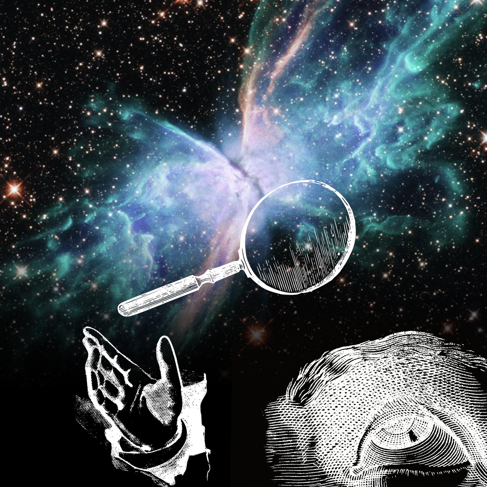
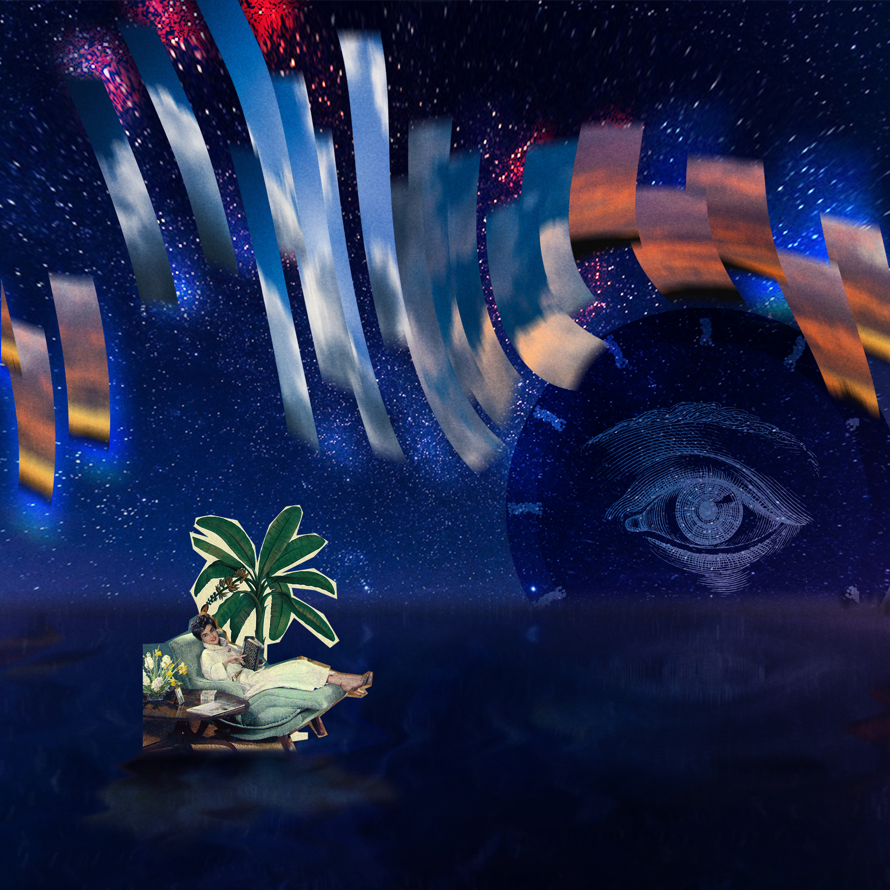
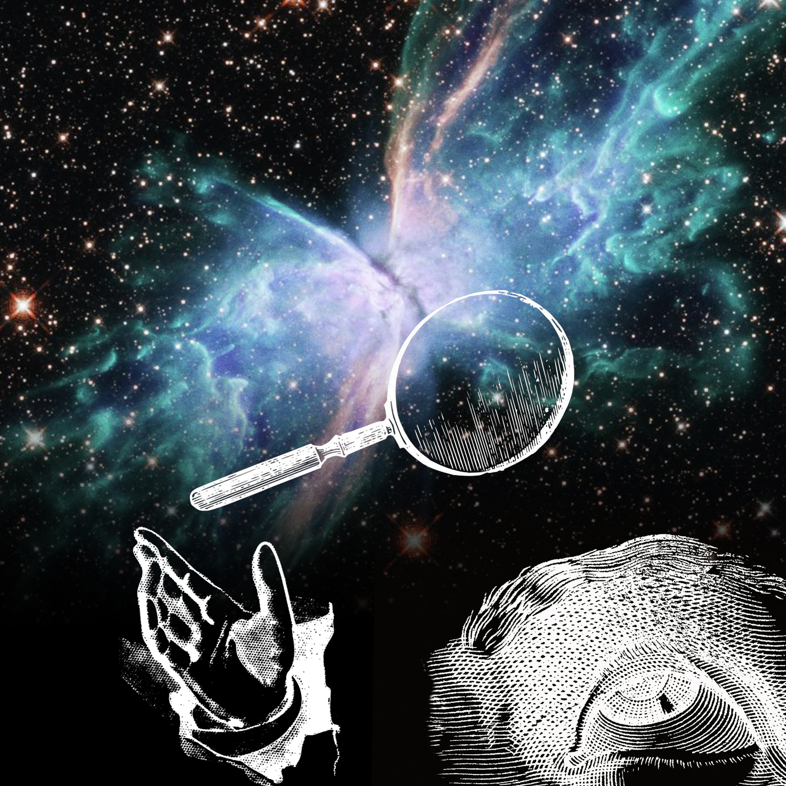
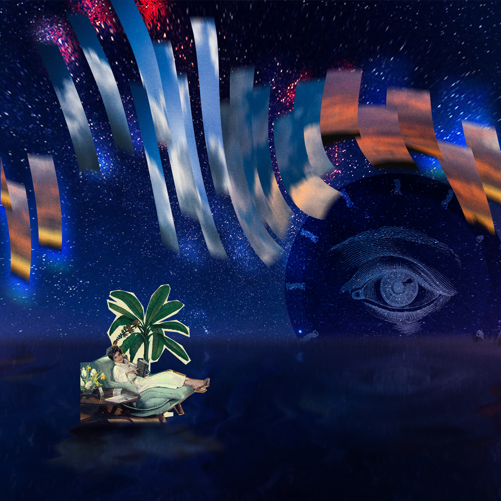
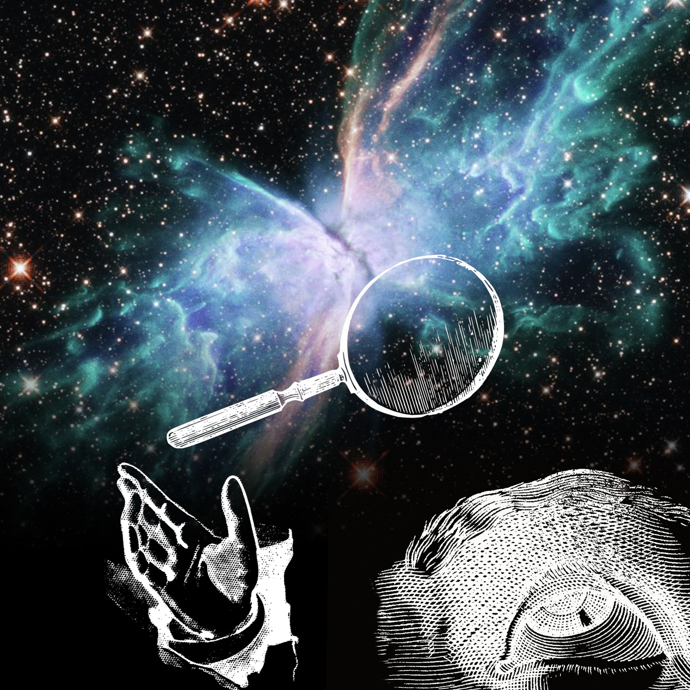
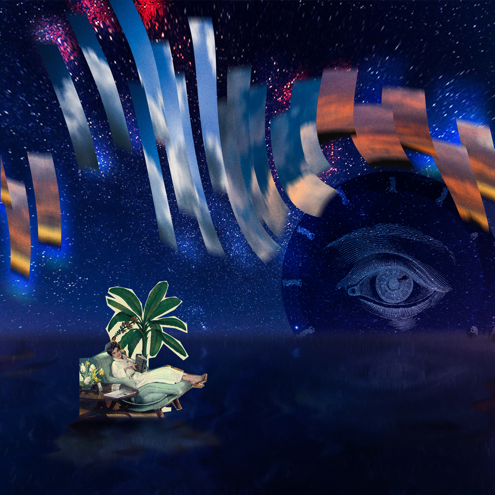

Hello! I’m Eldrin and this capstone project was conceptualized due to my own overwhelming feelings of isolation while studying during the pandemic. Early on in the year, I was able to express my experiences visually through smaller projects, which allowed me to better understand my relationship with aloneness and helped me realized that I had made peace with loneliness. In doing so, I realized that visual expression and communication with my peers is a strong method of finding peace and happiness in these times.
The following images were visual expressions that showed my process of reflection and peace with loneliness.


*explain loneliness* *explain how art can be used to make peace with loneliness*